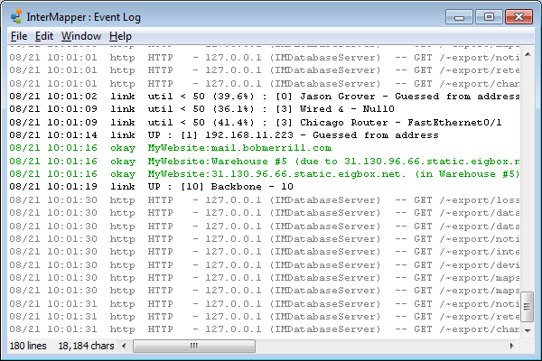
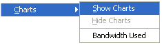
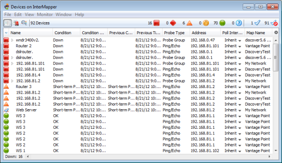

Window Menu
The Window menu lists all open maps at the bottom of the menu. You can also change certain aspects of window appearance, and can access other InterMapper windows.
| Menu Command | Description |
| Minimize | Minimize the frontmost window. |
| Zoom | Choose the Zoom command to expand (or contract) the frontmost window to the size necessary to show all devices, or to the maximum size of its current screen, if all items cannot be shown at the same time. If the Toolbar is shown, the minimum window width is the width of the toolbar. |
| Send to Back | Send the front-most window to the back. |
| Slideshow... | Rotate between open map windows. |
| Logs | Choose from a submenu of log files to view a history of events, outages, the Debug log, or custom logs you set up yourself. |
| Charts (submenu) | Choose from a submenu of defined charts. Note: In the Charts window, a Show Chart context menu item has the same effect. |
| Map List | Open the Map List window, or bring it to the front. |
| Device List | Open the Device List window. |
Minimize
Minimizes the frontmost InterMapper window.
Zoom
Choose the Zoom command to expand the frontmost window to the largest size necessary to show all devices, or to the maximum size of its current screen, if all items cannot be shown at the same time.
- Choose Zoom again to return the window to its original size.
Send to Back
Use the Send to Back command to send the front-most window to the back.
Floating windows associated with that window, such as Status windows, are hidden.
Slideshow...
Use the Slideshow... command to rotate the open map windows at a specified rate.

- From the Window menu, choose Slideshow..., and choose the amount of time each map should be shown.
- Choose Slideshow again to stop the slide show.
Logs
Use the Logs selection from the Window menu to choose from a submenu of log files. You can view a history of events, outages, connections to the web and remote servers, or custom logs you set up yourself.
Here is a typical Event Log window.

Event Log window.
Each time a device changes state, an entry is made in an event log window. In addition, InterMapper logs messages for the following events:
- Acknowledgements (including the text entered by the operator)
- Maps opening and closing
- Program startup
- DNS errors
- Errors when sending a notification
- Receipt of an SNMP trap
For more information, see the Overview of Information and Log Windows.
Charts
|
 |
Choose from a submenu listing all available charts for the current map window
|
Map List
Use the Map List command to open the Map List window or bring it to the front.

Device List
Use the Device List command to view the Device List window, which shows a global device list. InterMapper
keeps a server-wide list of all the devices that are being monitored on all
enabled maps that the current logged-in user can see.

The Device list window.
For more information, see The Device List Window.